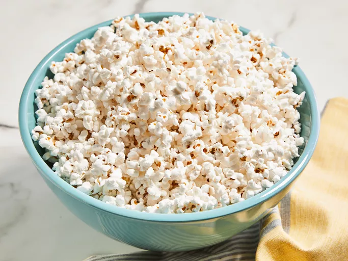

Microwave Popcorn

Ingredients
- ½ cup unpopped popcorn
- 1 teaspoon vegetable oil
- ½ teaspoon salt, or to taste
Steps
- Mix together unpopped popcorn and oil in a cup or small bowl.
-
Pour the coated corn into a brown paper lunch sack, and sprinkle in
the salt. Fold the top of the bag over twice to seal in the
ingredients.
-
Cook in the microwave at full power for 2 1/2 to 3 minutes, or until
you hear pauses of about 2 seconds between pops. Carefully open the
bag to avoid steam, and pour into a serving bowl.